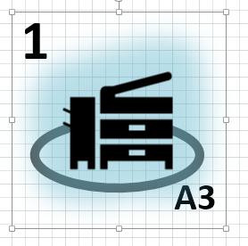
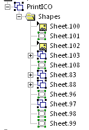
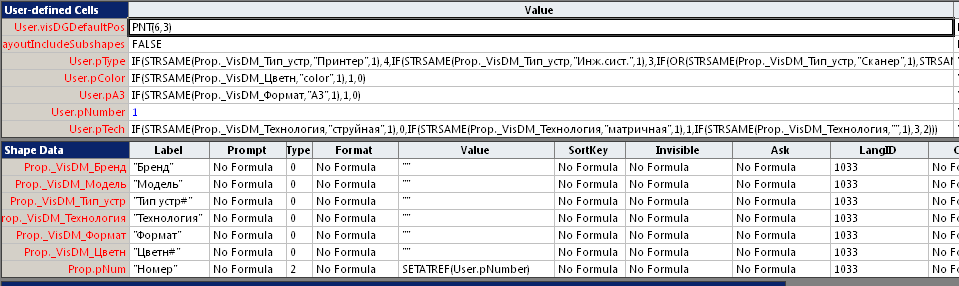

Требования, которые были выдвинуты как задание на шейп:
Шейп предназначен для использования на плане помещения.
Шейп должен выглядеть как иконка с переключаемым изображением, подсветкой и числовой индикацией.
Набор данных: Бренд, Модель, Тип, Технология, Формат, Цвет. Модель однозначно определяет остальные поля.
Выбор одной из 5 иконок в зависимости от типа устройства. 1 - круг (тип не задан). 2 - Принтер. 3 - МФУ, Копир, Дупликатор. 4 - Сканер, Факс. 5 - Инж.сист.
Индикатор цвета на два положения (дополнительное кольцо): цветной, монохромный.
Индикатор формата: буквенное обозначение для принтера А3.
Индикатор технологии на 4 положения (подсветка): 1 - не указана. 2 - струйная. 3 - матричная. 4 - светодиодная, лазерная, твердочернильная.
Данные принимаются из справочника (Excel).
Индикатор номера (в пределах документа). Число в правом верхем углу. Формируется автоматом при опускании шейпа на страницу или задается вручную.
Два варианта установки связи с данными: 1. Drag&Drop из окна внешних данных; 2 - выбор модели в специальном окне с возможностью предварительной фильтрации по текстовому фрагменту (сокращение списка выбора).
Версия Visio - 2019 Pro.
Выбор конструкции
Так как автонумерация специфическая, потребуется макрос. Значит результат - шаблон типа VSTM. Мастер-шейп в трафарете документа.
Так как версия 2019 Pro, допускается связь с источником через DataRecordset и окно внешних данных.
То есть разработке подлежат: шаблон (включая программу), мастер-шейп.
Мастер-шейп


Мастер-шейп является группой, объединяющей все пять основных иконок, дополнительные шейпы для текстовых сообщений и кольца - индикатора цвета.

В первую очередь после изготовления основы нужно добавить поля для передачи данных из внешнего источника. Для этого достаточно набросить строку внешнего источника на шейп-основу. При этом Visio формирует секцию Shape Data с именованными строками. Имена строк формируются из имен колонок и префикса _VisDM_. В принципе, можно было создать и запонить эту секцию вручную и дать имена без префикса, но с автоматикой быстрее, а префикс особо не мешает.
Сразу же есть смысл добавить еще строку Prop.pNum для ручной нумерации.
Далее можно было бы переходить к настройке управления входящими шейпами, но есть смысл сделать промежуточное преобразование, а именно перевести исходные данные в числовые. Во-первых, так будет проще проводить изменения, во-вторых, вся логика будет сосредоточена в одном месте - в главном шейпе.
Для этого добавляем в User секцию еще 5 полей: pType, pColor, pA3, pNumber, pTech и заполняем формулы перевода из Shape Data в числовые значения.
Некоторые из них достаточно простые. Например,
User.pColor=IF(STRSAME(Prop._VisDM_Цветн,"color",1),1,0)сформирует 1 только только в том случае, если в поле Цветн будет значение color и 0 для остальных значений.
Условие для перевода технологии значительно сложнее и содержит вложенные IF и OR.
User.pTech=IF(STRSAME(Prop._VisDM_Технология,"струйная",1),0,IF(STRSAME(Prop._VisDM_Технология,"матричная",1),1,IF(STRSAME(Prop._VisDM_Технология,"",1),3,2)))Значит технология "струйная" будет переведена в значение 0, "матричная" в 1, пустое значение даст 3, а все остальные технологии - 2.
И самая сложная формула - для типа устройства.
Здесь же реализована возможность ручного задания номера устройства. Для этого отводится ячейка User.pNumber. По условию, номер должен формироваться автоматически макросом или вручную. Автоформирование будет рассмотрено позже, а ручной ввод будет происходить через Shape Data. Это обеспечит формула =SETATREF(User.pNumber) в поле Prop.pNum. При такой формуле значение, вводимое пользователем в свойство "Номер" будет передаваться дополнительно в ячейку User.pNumber и изменять то, что ввела автоматика.
Настройка входящих шейпов
Все управление входяшими шейпами идет через секцию User основного шейпа. Причем для реализации задания пришлось обеспечить несколько разных типов воздействий, которые и рассмотрены ниже.
Переключение видимости
Следует упомянуть, что входящие шейпы-иконки выполнены разными способами. Две из них импортирована из другого приложения и являются картинками. Две другие нарисованы в Visio и сгруппированы. И еще одна является простым шейпом (не группой).
Видимость простого шейпа управляется формулой в секции Geometry.
Geometry1.NoShow=IF(Sheet.1!User.pType=0,FALSE,TRUE)То есть, если тип 0, то шейп видимый, при остальных типах - скрытый.
Для шейпов групп реализация несколько усложняется. Сама группа не имеет секции Geometry, поэтому аналогичные формулы заносятся в шейпы-компоненты группы. Это несколько усложняет работу, потому что приходится изменять не один, а 4-7 шейпов (в данном случае). Да еще и шейп может иметь несколько секций Geometry и аналогичные формулы нужно прописывать во всех секциях.
С входящими шейпами-картинками еще сложнее. Здесь мало управлять секцией Geometry, нужно еще скрыть внедренную картинку. Поэтому добавляются формулы в секцию Shape Transform.
Width=IF(Geometry1.NoShow,0,Sheet.1!Width*0.45)
Height=IF(Geometry1.NoShow,0,Sheet.1!Height*0.4442)
То есть, если геометрия невидима, то и размеры картинки сжимаются в 0.
Индикация номера
Номер принтера отображается либо по центру (если он нулевой), либо в верхнем левом углу. Проще было сделать это двумя разными шейпами. Так как шейпы прозрачны и без рамки, достаточно управлять текстом, заменять его пустым значением.
TextFields.Value=IF(AND(Sheet.1!User.pNumber>0,Sheet.1!User.pType>0),Sheet.1!User.pNumber,"")
TextFields.Value=IF(Sheet.1!User.pType=0,IF(Sheet.1!User.pNumber>0,Sheet.1!User.pNumber,"0000"),"")
Индикация формата принтера А3
А в индикаторе формата проще оказалось иметь постоянный текст, но скрывать его по условию через свойство HideText
Miscellaneous.HideText=IF(Sheet.1!User.pA3>0,FALSE,TRUE)Подсветка
По условию, устройства в зависимости от типа технологии должны подсвечиваться разным цветом. Было выделено 4 группы. Подсвечивается шейп-иконка. Собственно подсветка осуществляется за счет GlowColor. Таким образом все 4 шейпа-иконки имеют одинаковую формулу в секции Additional Effect Properties
GlowColor=IF(Sheet.1!User.pTech=0,THEMEGUARD(THEMEVAL("AccentColor6")),IF(Sheet.1!User.pTech=1,THEMEGUARD(THEMEVAL("AccentColor2")),IF(Sheet.1!User.pTech=2,THEMEGUARD(THEMEVAL("AccentColor4")),1)))
Шаблон
Шаблон понадобился для сохранения программной части решения. В первую очередь это функция автонумерации, которая начинается с события EventDrop
EventDrop=CALLTHIS("DropPrinter")То есть при переносе шейпа из трафарета на страницу рисунка или дублировании шейпа на странице будет вызываться процедура DropPrinter, которая впишет в ячейку User.pNumber номер, вычисленный функцией GetNextPrinterNum.
Public Sub DropPrinter(vsoShape As Visio.Shape)
If vsoShape.Data1 = "PrintICO" Then
num = GetNextPrinterNum
vsoShape.Cells("User.pNumber") = num
...
Очередной номер вычисляется после просмотра всех шейпов в документе путем прибавления 1 к наибольшему найденному номеру. Принимаюстя во внимание только шейпы, имеющие специальный признак в Data1.
Private Function GetNextPrinterNum() As Integer
Dim MaxNum As Integer
On Error Resume Next
MaxNum = 0
For Each pg In ActiveDocument.Pages
For Each shp In pg.Shapes
If shp.Data1 = "PrintICO" Then
n = CInt(shp.Cells("User.pNumber").Result(32))
If MaxNum < n Then MaxNum = n
End If
Next
Next
GetNextPrinterNum = MaxNum + 1
On Error GoTo 0
End Function
Выбор модели принтера
Выбранная технология связи с источником данных позволяет передавать данные в шейп путем "набрасывания" строки из окна внешних данных на шейп. Однако при большом объеме данных выбор нужной строки затруднен, поэтому в решение добавлена возможность фильтрации данных. Для этого понадобилась дополнительная форма, содержащая ComboBox.
После связи с источником все данные передаются в документ Visio и хранятся в нем в виде объекта DataRecordset, они доступны для программной выборки макросом без необходимости работы с окном внешних данных. По условию, поле "Модель" может быть использовано в качестве ключевого, то есть достаточно, используя ComboBox, выбрать нужную строку данных и передать данные из этой строки в Shape Data.
Если бы данные были отсортированы, то только применение ComboBox уже давало бы возможность повысить удобство выборки, так как при наборе первых символов список выбора он автоматически находит эти символы в списке и позиционируется в нужном месте. Однако было принято решение еще больше сократить список за счет фильтра на нахождение фрагмента в произвольном месте строки.
В результате в проект VBA был добавлен массив для хранения сортированных данных, который заполняется при первом обращении к нему. Процедура GetRawData выбирает сырые данные из DRS, а GetData преобразует их в сортированный массив.
Sub GetData()
Set DRS = New Collection
Set SortedDRS = New Collection
GetRawData ' from DataRecordSet to Collection
' sorting by Model
If DRS.Count <= 1 Then Exit Sub 'Column names and F1
For j = 2 To DRS.Count
dr = DRS(j)
s = dr(1)
Flag = True
For i = 1 To SortedDRS.Count
If s < SortedDRS(i)(1) Then
Flag = False
SortedDRS.Add dr, , i
Exit For
End If
Next
If Flag Then
SortedDRS.Add dr
End If
Next
' Debug.Print DRS.Count
End SubPrivate Sub GetRawData()
' fills DRS collection
Dim vsoDataRecordset As Visio.DataRecordset
Dim lngRowIDs() As Long
Dim lngRow As Long ' row Pointer
Dim varRowData As Variant
If ThisDocument.DataRecordsets.Count < 1 Then Exit Sub
Set vsoDataRecordset = ThisDocument.DataRecordsets(1) ' first recordset
lngRowIDs = vsoDataRecordset.GetDataRowIDs("")
For lngRow = LBound(lngRowIDs) To UBound(lngRowIDs)
varRowData = vsoDataRecordset.GetRowData(lngRowIDs(lngRow))
DRS.Add varRowData 'array of columns
Next lngRow
End SubТеперь после ввода фрагмента строки и нажатия на кнопку список выбора в ComboBox обновляется уже в существенно сокращенном виде и после выбора остается только передать данные из отсортированного массива в шейп, что выполняется вот таким фрагментом программы.
ModelSelected = ""
fModel.Show 1
If Not ModelSelected = "" Then
For Each r In SortedDRS
If r(1) = ModelSelected Then
vsoShape.Cells("Prop._VisDM_Бренд").Formula = Chr(34) & r(0) & Chr(34)
vsoShape.Cells("Prop._VisDM_Модель").Formula = Chr(34) & r(1) & Chr(34)
vsoShape.Cells("Prop._VisDM_Тип_устр").Formula = Chr(34) & r(2) & Chr(34)
vsoShape.Cells("Prop._VisDM_Технология").Formula = Chr(34) & r(3) & Chr(34)
vsoShape.Cells("Prop._VisDM_Формат").Formula = Chr(34) & r(4) & Chr(34)
vsoShape.Cells("Prop._VisDM_Цветн").Formula = Chr(34) & r(5) & Chr(34)
Exit For
End If
Next
End IfДополнение
В этой статье довольно подробно описана конструкция решения, содержащего специализированный смарт-шейп и средства его привязки к источнику данных (справочнику). Работа была выполнена на заказ и обошлась заказчику примерно в 25$. Решение едва ли подойдет кому-либо еще в неизменном виде, поэтому основная цель статьи - показать, из каких элементов состоят решения такого типа и как эти элементы взаимодействуют.